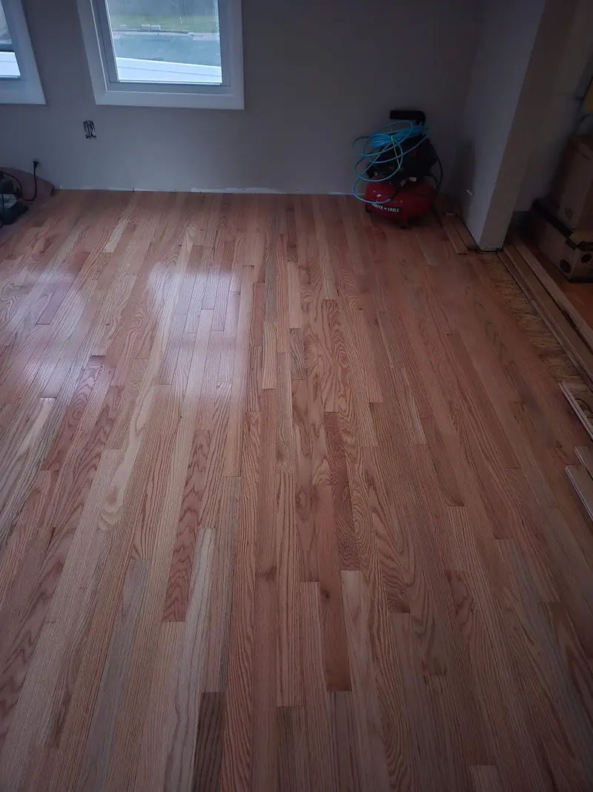
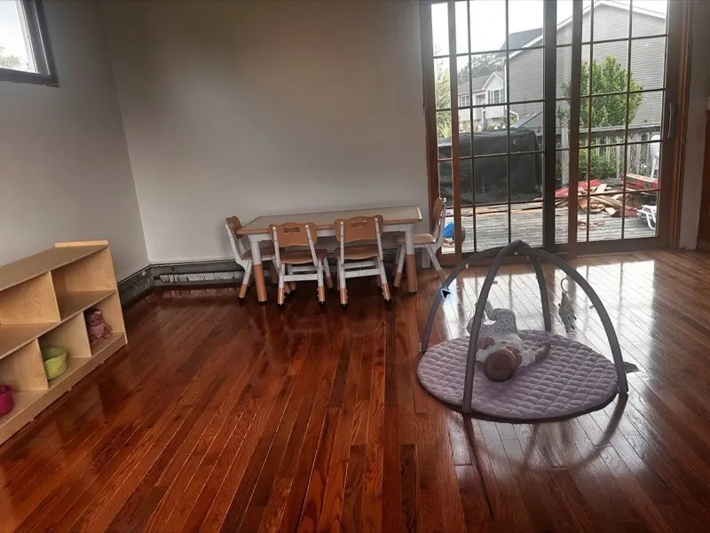

Can old hardwood floors be refinished instead of replaced?
Often, yes. If the wood is structurally sound and has enough material left, sanding and refinishing can restore the existing floor without replacing it.
Floor refinishing
If the floor is solid, refinishing can save the wood you already have. We sand it flat, help pick the stain, and seal it for daily use.
Sanding and refinishing usually costs less than replacement and keeps real hardwood in the house. We will tell you if the floor has enough life left to refinish.
Real refinishing work
Refinishing removes a worn surface, evens the boards, and builds the color and protective finish back up when the existing floor is sound.



The first decision is whether the existing hardwood has enough sound material to save.
Often, yes. If the wood is structurally sound and has enough material left, sanding and refinishing can restore the existing floor without replacing it.
Individual damaged boards can often be repaired or replaced before sanding when the rest of the hardwood floor is worth saving.